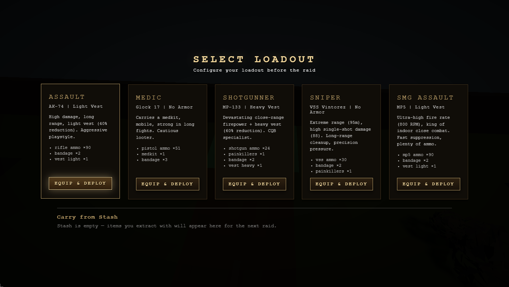
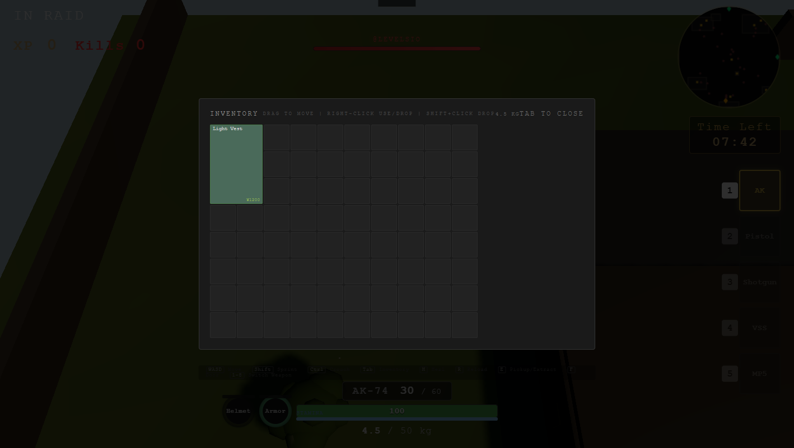
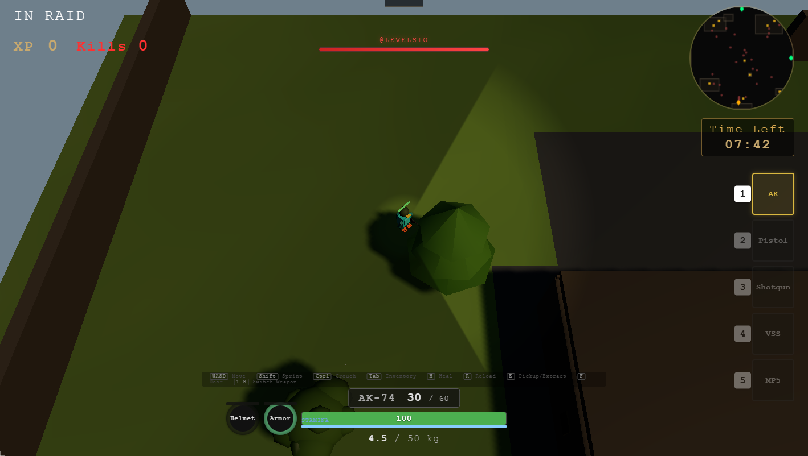
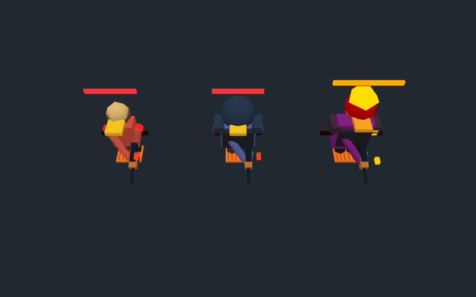
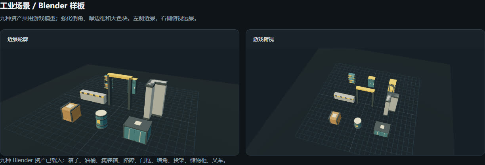

Featured Case Study · Cursor Vibe Jam 2026 · Solo精选案例 · Cursor Vibe Jam 2026 · 独立
tarduck — extraction shooter
Three.js · Browser · Risk/Reward Loop · Solo · 30 Days
A browser extraction shooter built around one decision: keep searching for loot, or leave with what you have. I led the game design, implementation and integration, connecting combat, inventory and progression into a playable raid loop. 一个围绕“继续搜刮，还是带着已有收益撤离”展开的浏览器射击游戏。我负责游戏设计、开发实现与整合，把战斗、背包和成长连接成可玩的战局循环。
Problem问题
An extraction shooter only works if "keep looting or leave" carries real weight in every raid.
撤离射击只有在「继续搜刮还是撤离」每局都有分量时才成立。
Decision决策
Tie combat risk, grid-inventory space and extraction to that one choice, and tune it with fog, enemy waves, extract placement and inventory pressure.
把战斗风险、网格背包空间和撤离都绑在这个选择上，再用迷雾、敌人波次、撤离点位置和背包压力调节奏。
Outcome结果
A playable raid loop in 30 days. A later polish pass fixed four first-raid P0 issues and made rendering much faster on integrated graphics.
30 天做出可玩的战局循环。之后的打磨修好了第一局的 4 个 P0 问题，集显上渲染明显更快。
The decision inside each raid每一局的核心选择
Enter a raid, scout through fog, fight for loot and decide when to extract. Limited inventory space makes each pickup a choice; staying longer creates more opportunities to collect loot while keeping the run at risk. Successful extraction connects the current raid to upgrades for the next.
进入战局，在迷雾中探索，为战利品战斗，再决定什么时候撤离。有限的背包空间让拾取变成选择；停留越久，搜刮机会越多，已有收益也继续处于风险中。成功撤离把本局收获与下一局的成长连接起来。

How the systems support that choice系统如何支撑这个选择
Weapons, enemy behaviours and body-part damage shape combat risk. Grid inventory, armour durability and supplies make preparation and looting matter. Talents and crafting give extracted resources a use beyond the current run. These systems share a design purpose: make the decision to stay or leave consequential.
武器、敌人行为和部位伤害构成战斗风险；网格背包、装甲耐久与补给让备战和搜刮有取舍；天赋与合成则赋予撤离收益跨局的用途。这些系统共同服务于一个目标：让“继续还是撤离”真正影响玩家的得失。
The grid makes carrying space part of the decision: a piece of armour occupies cells that could hold other loot. Its value therefore depends on what the player gives up carrying, as well as its combat use. Extraction then gives that loadout a stopping point: bank the current haul or expose it to another encounter.
网格背包把空间本身变成决策资源：一件装甲会占用原本能装其他战利品的格子。因此，它的价值不仅来自战斗用途，也取决于玩家为它放弃携带什么。撤离再给这组取舍一个结算点：保住当前收获，或让它继续承担下一场遭遇的风险。

My contribution and implementation我的贡献与实现方式
I defined the loop and supporting systems, broke the work into implementation tasks and integrated the changes. The prototype uses Three.js and Vite, procedural geometry, PBR materials, bloom and ACES tone mapping. An in-game lil-gui panel supports live parameter changes.
我定义核心循环与支撑系统，把需求拆成开发任务并整合改动。原型使用 Three.js 与 Vite，结合程序化几何、PBR 材质、Bloom 和 ACES 色调映射，并用内置 lil-gui 面板实时调参。
Tuning risk and readability风险与可读性的调优
Fog density, enemy waves, extraction placement, inventory pressure and upgrade costs are the main pacing controls. They affect different parts of the same decision: what the player can see, what they can carry and what they stand to gain. A useful playtest question is whether a fuller inventory changes the decision to take another fight.
迷雾密度、敌人波次、撤离点位置、背包压力和升级成本是主要调优手段。它们分别影响玩家能看见什么、能带走什么，以及继续行动能得到什么。后续试玩应重点观察：背包逐渐装满后，玩家是否会改变继续战斗的决定。

October polish pass: checking the first raid十月打磨：从第一局开始排查
After the jam I went back to the game with one question: what goes wrong for a new player on their first raid? I ran a health check from a fresh save on a laptop's integrated GPU and logged every issue as P0 (hits a judge or new player on the first raid), P1 (feel and readability) or P2 (minor). Four P0 issues came out of it, and I fixed all four the same day.
Jam 结束后我带着一个问题重新检查游戏：新玩家第一局会遇到什么问题？我用全新存档、在笔记本集显上做了一次体检，把每个问题按 P0（评委或新玩家第一局就会碰到）、P1（手感和可读性）、P2（小问题）分级。一共找出 4 个 P0，当天全部修完。
The loadout lied. A first-run shortcut gave the Assault kit a light vest and 60 rounds, while its card promised 90 rounds and two bandages, so new players started with no healing. Every kit now grants exactly what its card shows.
配置卡和实际不符。首次游玩的一个捷径分支只给突击配置一件轻甲和 60 发子弹，卡片上写的却是 90 发子弹加两个绷带，新玩家一开局就没有治疗道具。现在每套配置发放的内容和卡片完全一致。
The wrong map, in the wrong language. Raids opened on a grey-block test layout with a debug link pinned to the screen, and several signs and route hints were still in Chinese. The finished Industrial map is the default again, the test layout is opt-in, and a scan of a live raid finds no untranslated text.
默认地图和语言都不对。开局进的是灰盒测试地图，屏幕上还挂着调试链接，好几处路牌和路线提示是中文。现在默认回到做完的工业地图，测试地图改为手动开启，扫描战局界面已经没有未翻译的文字。
Performance on integrated graphics. The median frame was 33 ms, but hitches of up to a second pulled the average to about 14 FPS. The root cause was nine shadow-casting lights: each point-light shadow re-renders the scene six times, over roughly 1,500 shadow casters. I added quality tiers chosen from the GPU (low turns off point-light shadows, uses a smaller, harder sun shadow and skips bloom) with an automatic drop to low if frames stay slow. Indoor lights now dim instead of switching off, because changing the number of visible lights recompiled every shader. In a same-page A/B benchmark, low rendered much faster than high.
集显性能。帧时间中位数 33 ms，但最长一秒的卡顿把平均帧率拉到约 14 FPS。根因是 9 个投射阴影的光源：每个点光源阴影都要把场景多渲染 6 次，涉及约 1500 个投影物体。我加了按显卡自动选择的画质档位（低档关闭点光源阴影、改用更小更硬的太阳阴影、不开 Bloom），帧时间持续过高时会自动降到低档。室内灯改成调亮度而不是开关，因为可见光源数量一变，所有着色器都会重新编译。同一页面 A/B 测试中，低档渲染明显比高档快。
This pass lives on a separate branch and is not in the live jam build yet. Not yet verified: real-time FPS on a discrete GPU, and a full raid through the boss fight and extraction.
这轮改动在单独的分支上，还没有更新到线上 Jam 版本。尚未验证：独显上的实时帧率，以及打完 Boss 到撤离的完整一局。

